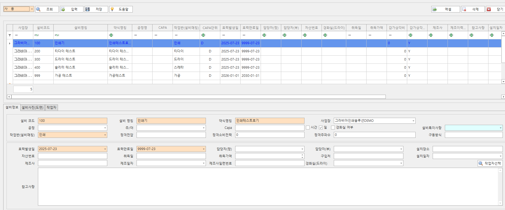
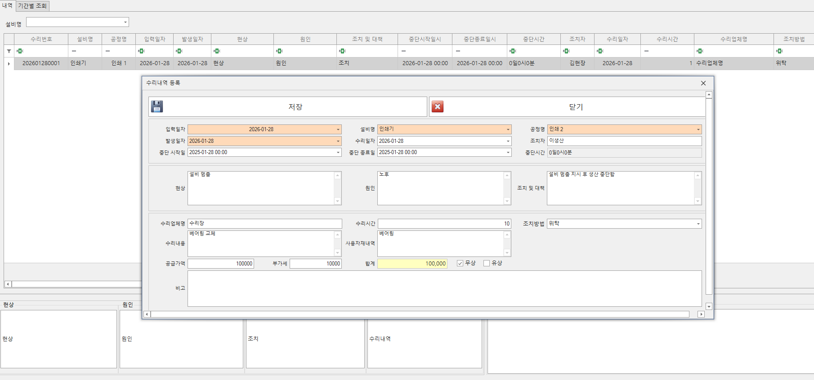
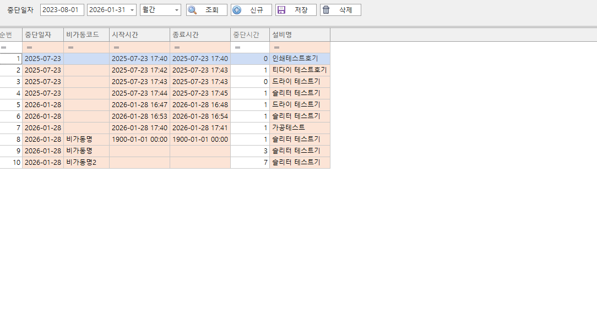

설비 관리
설비의 가동 상태와 유지보수 이력을 통합해 안정적인 생산 운영을 지원합니다.
설비 관리 화면


설비정보
- 설비 정보를 등록/조회 할 수 있습니다.


수리내역등록
- 설비 수리 내역을 등록/조회 할 수 있습니다.
- 처리 비용 및 처리 시간을 관리할 수 있습니다.


비가동등록/확인
- 비가동 내역을 수동으로 등록/수정합니다.
- 생산 실적 등록 시 입력한 비가동 내역을 확인하고 수정할 수 있습니다.
바로가기
제품 관리
그라비아 인쇄 특화 제품 정보를 관리합니다.
바로가기 →
영업 관리
고객의 수주(주문), 출하, 납품 정보를 관리합니다.
바로가기 →
구매자재관리
구매 요청부터 발주, 입고, 재고까지의 흐름을 관리합니다.
바로가기 →
생산 관리
작업지시부터 생산 실적, 불량 내역까지의 흐름을 관리합니다.
바로가기 →
동판 관리
동판 발주부터 보관, 사용 이력까지 한 번에 관리합니다.
바로가기 →
품질 관리
제품검사부터 불량 관리, 품질 지표까지 한 번에 관리합니다.
바로가기 →
설비 관리
설비 등록부터 점검, 유지보수 이력까지 한 번에 관리합니다.
바로가기 →
재고 관리
현재고 현황 및 재고이동, 기초재고를 등록/조회 할 수 있습니다.
바로가기 →
수금관리·경영정보관리
미수금관리 및 경영지표 정보를 관리합니다.
바로가기 →